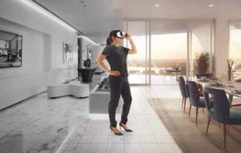
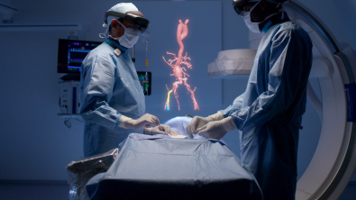

Assignment
Bij dit onderwerp is vanuit de Haagse Hogeschool de opdracht gegeven om een AR- of VR- concept te bedenken voor drie toepassingsgebieden. Daarbij is gevraagd om voor elk concept specifiek te beschrijven wat ermee bereikt moet worden en hoe het werkt, ondersteund met een illustratie/afbeelding. De toepassingsgebieden waar we uit konden kiezen waren: 1. educatie en/of onderzoek, 2. (angst) therapie, 3. gezondheidszorg, 4. kunst en/of museums, 5. auto’s/auto technologie/weg constructies en/of infrastructuur, 6. openbaar vervoer en als laatste 7. sport/beweging.
De toepassingsgebieden die ik heb gekozen zijn: (angst)therapie, gezondheidszorg en kunst/museums.
1. Voor (angst)therapie kan Virtual Reality naar mijn mening echt een uitkomst zijn. Mensen die heel bang zijn voor iets specifieks kunnen door middel van VR in een hele andere wereld terecht komen waarin hun gedachte kunnen verzetten en gerustgesteld kunnen worden. Je ziet tegenwoordig vaak dat er spellen bedacht worden waarin virtual reality op een negatieve manier gebruikt wordt, door je in een wereld te brengen waar je schrikt van de dingen die langs je komen of dat je bijvoorbeeld op het randje van een hoog gebouw staat. Echter, ik denk dat je virtual reality ook juist op de tegenovergestelde manier kan gebruiken. Door bijvoorbeeld voor mensen met een angst therapie voor inbrekers of mensen die achter je aankomen een wereld te maken waarin de persoon een huisdier heeft, je mooi weer buiten ziet en het altijd daglicht is. Zo worden de “enge” elementen weggehaald en kunnen ze bij een angstaanval een VR-bril erbij pakken en even naar een hele andere wereld gaan.
2. Voor gezondheidszorg denk ik dat het heel veel uitkomsten kan bieden. Als concept zie ik dit me nu vooral voor me in de vorm van operaties. Hoe handig zou het zijn als chirurgen tijdens de operaties in de vorm van AR/VR boven het lichaam projecties zouden zien van de organen of van instructies. Zo kunnen ze veel specifieker en nauwkeuriger een operatie uitvoeren en worden het maken van fouten verminderd. Ze kunnen van tevoren opzoeken en aangeven wat voor soort operatie ze gaan uitvoeren en welke informatie daarbij noodzakelijk is. Daarnaast kunnen ze door van tevoren een scan van het lichaam gemaakt te hebben tijdens te operatie hier onderdelen van projecteren.
3. Voor kunst/museums denk ik dat je heel veel kanten op kan gaan met AR en VR. Door middel van een VR-bril zou je vanuit huis kunstwerken kunnen bekijken en echt door een museum kunnen lopen. Door een kunstwerk "aan te raken" kan je meer informatie verkrijgen en ook in aanraking komen met de kunstenaar van het kunstwerk. Er komt dan namelijk een beeld naar voren van de kunstenaar, net alsof hij of zij daar echt staat, en die verteld meer over het kunstwerk en zijn of haar werkwijze. Dit zou je in een normaal/echt museum vrijwel nooit meemaken, maar door middel van deze technologieën kan het werkelijkheid worden! Je kunt dit dus vanuit huis gebruiken, maar het kan ook in een museum verwerkt worden, door op een plek brillen neer te leggen waarmee bezoekers deze extra beelden kunnen bekijken.